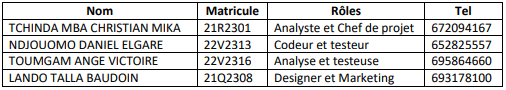
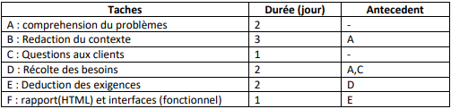
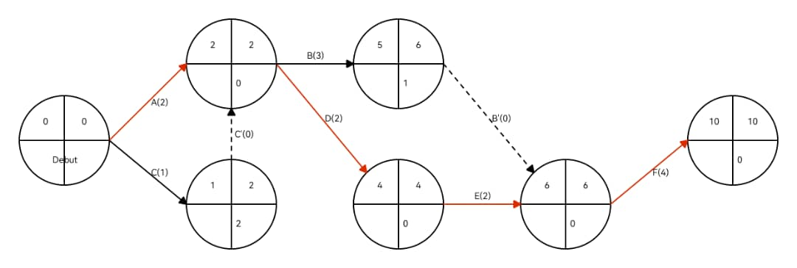
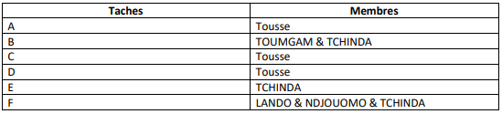
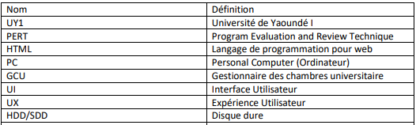

I. Cadre du Projet
A. Description du projet
1. Contexte:
Il nous a été (Groupe 9) demande de concevoir un logiciel de gestion de chambres et de
bâtiments de la cite universitaire de UY1. Ainsi donc avons-nous pour objectif de facilite la
gestion de ces chambres universitaires en fonction du besoin existant.
2. Problèmes à résoudre :
Nous souhaitons développer une application, qui permet, à un moment voulu consulter
l’état d’une chambre universitaire. Et de savoir exactement qui s’y trouve à un moment
donne.
3. Portée :
Ce logiciel sera déployé dans l’enceinte de l’UY1, et pourras également être adapter
dans d’autres universités qui ont des chambres à gérer.
4. Equipe :

B. Répartition des taches

C. Echéancier
Nous avons pu réaliser un Diagramme de PERT pour expliquer la façon dont nous avons
géré la dure du projet fixe.

La répartition des taches c’est faites de la façon suivantes ;-

D. Priorisation
Les flèches rouge représente le chemin critique (les étapes qui doivent être
effectué à temps) car sinon pourrons impacter sur la date de au plus tard de la
livraison du projet. Et donc la séquence d’étapes (A – D – E – F) est très crucial pour la
bonne réalisation du projet et donc est prioritaire.
E. Echanges avec client
Questions :
-
Qu’attendez-vous exactement du logiciel à développer ?
-
Que doit ton gérer en priorité ?
-
En combien de temps voulez-vous le logiciel ?
-
Comment voulez-vous que votre application soit déployée ?
-
Avez-vous des exigences esthétiques ou de design en particulier ?
Reponses :
-
Le logiciel doit pouvoir me permettre de savoir l’État exact de chaque
chambre des bâtiments universitaires, de pouvoir ajouter des bâtiments et
des chambres en cas de rénovations.
-
L’État des chambres.
-
1semaine et demi.
-
J’aimerais pouvoir l’utiliser sur mon lieu de travail donc sur un PC.
-
Non juste simple à utiliser.
II. Définition du domaine
A. Hypothèses
Lors de l’élaboration des exigences, nous allons considérer un seul acteur car c’est la
direction de la gestion des citées universitaire qui aura accès à ce système pour l’instant. Et
donc nous allons ressortir ses exigences et besoins.
B. Glossaire

C. Besoins Fonctionnel
Les besoins fonctionnel sont exprimés sous forme de cas d'utilisation et de scénarios,
décrivant comment le logiciel sera utilisé dans différentes situations ci-dessous ;-
Au gestionnaire des chambres universitaire (GCU) d’effectuer les opérations suivantes ;-
- Ajout des bâtiments universitaire
- Suppression des bâtiments
- Modification des bâtiments
- Ajout de chambres
- Supprimer une chambre
- Modifier une chambre
-
Consulter informations des chambres
-
Consulter Étudiants dans chambre (Matricule, Date entrée, Date sortie)
D. Besoins non-fonctionnel
a. Parmi les besoins non-fonctionnel de cette application, nous pourrons énumérer les
suivantes ;-
- Authentification du GCU (Sécurité)
- Envoyer notification aux étudiants(Performance)
- Recherche de chambres par leurs numéros(Performance)
- Afficher les étudiants date expire(Performance)
- Enregistrement trace chambre (performance)
- Enregistrement trace bâtiments(Performance)
b. 5 caractéristiques du logiciel affectant l'expérience utilisateur sont :
-
Interface utilisateur conviviale : Une interface intuitive et facile à utiliser permet aux
utilisateurs d'interagir efficacement avec le logiciel, améliorant ainsi leur expérience.
-
Performance rapide : Un logiciel qui fonctionne rapidement et réagit rapidement aux
actions de l'utilisateur évite les frustrations liées à l'attente et offre une expérience
fluide.
-
Fiabilité et stabilité : Un logiciel fiable qui fonctionne sans bugs ni plantages inspire
confiance aux utilisateurs et évite les interruptions désagréables de l'expérience.
-
Adaptabilité et personnalisation : La possibilité de personnaliser le logiciel en fonction
des préférences de l'utilisateur lui permet de l'adapter à ses besoins spécifiques,
améliorant ainsi son expérience globale.
-
Sécurité des données : La protection des données personnelles et la sécurité du
logiciel sont essentielles pour instaurer la confiance des utilisateurs et garantir une
expérience utilisateur positive.
Ces caractéristiques sont importantes car elles contribuent à rendre l'utilisation du logiciel
agréable, efficace et sans problèmes pour les utilisateurs.
III. Analyse
A. Risque
Les 4 risques associés au projet sont :
-
Risque de dépassement des délais : Il existe un risque que le projet prenne plus de temps
que prévu, ce qui peut entraîner des retards dans la livraison du produit final. Cela peut être
dû à des problèmes techniques, des changements de scope ou des ressources insuffisantes.
-
communication inefficace : Si la communication entre les membres de l'équipe du projet
n'est pas claire, cohérente et régulière, cela peut entraîner des malentendus, des retards
dans la prise de décision et une mauvaise coordination, ce qui peut compromettre la
réussite du projet.
-
Risque de qualité insatisfaisante : Il existe un risque que le produit final ne réponde pas
aux attentes en termes de qualité. Cela peut être dû à des erreurs de conception, des
lacunes dans les tests ou une mauvaise gestion du contrôle qualité.
-
Risque de résistance au changement : Lorsqu'un projet implique des changements
importants dans les processus ou les habitudes de travail, il existe un risque que les
utilisateurs résistent à ces changements. Cela peut entraîner une adoption lente du nouveau
système ou une utilisation inefficace, ce qui compromet l'atteinte des objectifs du projet.
B. Besoin Matériels
1. Matériel Nécessaire :
Ressources à disposition :
Nous avons à notre disposition 3 PC ;-
- 1PC core i5 2emme génération, 6G RAM, 2 cœurs, 500GB HDD
- 1PC core i5 3emme génération, 4G RAM, 2 cœurs, 500GB HDD
- 1PC core i5 6emme génération, 8G RAM, 2 cœurs, 256GB SSD
Solution de stockage :
Nous travaillons sur des outils de versionning GIT et GIT Hub. Git nous permettant
de travailler a plusieurs sur un même projet et git hub qui stock en toute sécurité nos
progressions sans risque de perte de donnes car il est bien encadre par le chef de projet.
Contraintes conceptuelle :
Des couleurs appropries et des icônes d’indications devrons être utilise pour rendre
le design plus attrayant en respectant les principes du UI/UX designing.
2. Prototypes :